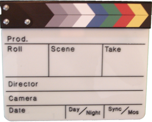
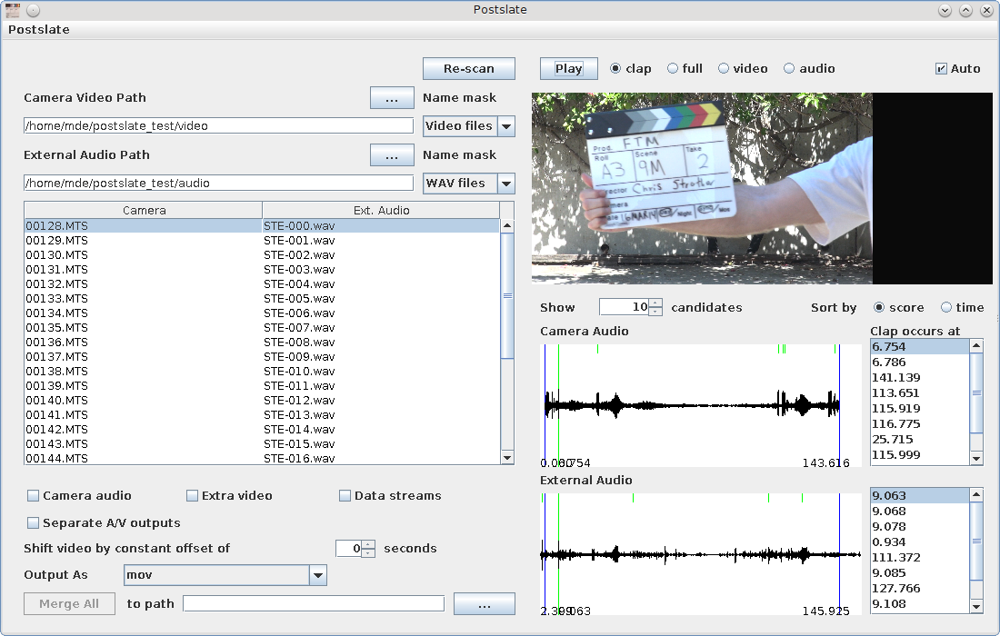

A video post-production tool for synchronizing media clips
Postslate is a tool for use in video post-production. Its main purpose is to help you match and synchronize video segments recorded by a camera with audio clips captured by a separate recorder.
Postslate works by detecting and matching the "clap" sounds from a slate.
The Postslate tool allows you to preview and adjust matches between video and audio clips, and to prepare the clips for use in editing.
Once synchronized, the camera video and external audio are trimmed and optionally merged together. Merging involves repackaging streams without transcoding them, so there is no loss of quality.
All of Postslate's operations are non-destructive: Postslate NEVER deletes or modifies your original media clips. It only reads them.
In its current form, Postslate can be useful in your video production efforts if:
The latest stable version of Postslate is 0.1.0-alpha. See the Releases page.
Postslate is written in Java and should work on virtually any modern system.
Postslate requires a Java virtual machine, version 6 or higher. There are many JRE distributions freely available. If you don't already have one, please see this list.
Before installing Postslate, you need to make sure that the FFMPEG package is installed. If you don't already have it, see the FFMPEG website. Version 2.0 or higher is strongly recommended.
If you want to modify Postslate, you should also have the Ant build tool installed, or else be prepared to use your own tool--e.g., Eclipse.
The easiest installation is simple to unpack the distribution file (i.e., postslate-*.tar.gz)
and to launch it using the included postslate script (Mac/Linux/Unix).
On Windows, run postslate.bat.
From the Mac/Linux/Unix/Cygwin command line, you can also use the commands
./configure [--prefix=path]; make; make install;
familiar to many users of free software.
To get started, please see the tutorial.
Copyright (C) 2014 New Aspect Technologies, Inc. All rights reserved. See the LICENSE.txt file for copyright licensing info.